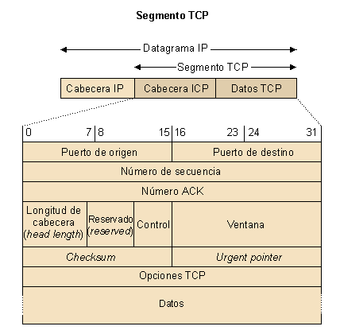

La unidad de información del protocolo TCP se llama segmento TCP. El segmento TCP está compuesto por los datos enviados desde la capa de aplicación y la cabecera añadida por el protocolo de transporte. El segmento TCP es luego encapsulado en un datagrama IP para ser enviado por la capa de red. El formato del segmento TCP es el siguiente:

El segmento TCP consta de una cabecera y un cuerpo para encapsular datos. La cabecera consta de los siguientes campos:
- Los campos puerto de origen y puerto de destino (16 bits cada dirección), que identifican las aplicaciones en los terminales de origen y de destino.
- El campo número de secuencia (32 bits), que identifica el primer byte del campo de datos. En el TCP no se numeran segmentos, sino bytes. Por lo tanto, el número de secuencia identifica el primer byte de los datos que envía el segmento. Al principio de la conexión se asigna un número de secuencia inicial (ISN, del inglés Initial Sequence Number). A partir de este momento, el TCP numera los bytes consecutivamente a partir del ISN.
- El campo número ACK (32 bits). El TCP reconoce datos mediante la técnica de piggybacking. Al activar un bit de la cabecera (el bit ACK), el TCP tiene en cuenta el número de secuencia ACK que indica al otro extremo TCP el próximo byte que está dispuesto a recibir. Dicho de otro modo, el número ACK menos uno indica el último byte reconocido.
- El campo longitud de la cabecera (header length) (4 bits), que indica la longitud de la cabecera, que puede ser variable. La longitud típica es de 20 bytes, pero si el TCP utiliza el campo de opciones puede llegar a una longitud máxima de 60 bytes. De esta manera, el TCP sabe dónde empiezan los datos.
- El campo reservado (reserved) (6 bits). Tal como indica su nombre, está reservado y se inicializa con ceros.
- El campo control (6 bits). Cada bit, denominado indicador, señala una función específica del protocolo cuando está activo (en 1), como las siguientes:
- URG: hay datos urgentes y el campo urgent pointer indica la cantidad de datos urgentes que se encuentran en el segmento.
- ACK: el campo número ACK indica el siguiente byte que espera recibir la conexión TCP. Si este campo no está activo, el campo número ACK no tiene ningún significado para el TCP.
- PSH: invoca la función push en el protocolo. Esta función dice al receptor que entregue en la aplicación todos los datos que tenga disponibles en la memoria intermedia de recepción sin esperar a completarlos con datos adicionales. De esta manera, los datos no esperan en la memoria intermedia receptora hasta completar un segmento de dimensión máxima. No se debe confundir con el indicador URG, que indica que la aplicación ha señalado una porción del segmento como urgente.
- RST: hace un reset de la conexión.
- SYN: resincroniza los números de secuencia.
- FIN: el transmisor ha acabado la conexión.
- El campo ventana (16 bits) indica cuántos bits componen la ventana de transmisión del protocolo de control de flujo por ventana deslizante. A diferencia de los protocolos del nivel de enlace, en los cuales la ventana era constante y contaba tramas, en el TCP la ventana es variable y cuenta bytes. Con cada segmento transmitido, un extremo TCP advierte el otro extremo de la cantidad de datos que está dispuesto a recibir en cada momento. De este modo, el extremo que recibe un segmento actualiza el tamaño de su ventana de transmisión.
- El campo checksum (16 bits) se utiliza para detectar errores.
- El campo urgent pointer (16 bits) tiene sentido cuando el bit de control URG está activo e indica que los datos que envía el origen son urgentes. También identifica el último byte del campo de datos que es urgente. El receptor procesa estos datos tan rápidamente como puede. La aplicación es la que indica que estos datos son urgentes; en la recepción, el TCP indica a la aplicación que los datos son urgentes. Algunas aplicaciones que utilizan el urgent pointer son, por ejemplo, telnet, rlogin o ftp. En la librería de sockets, el tráfico urgente se llama tráfico fuera de banda (out of band).
- El campo opciones TCP permite añadir campos a la cabecera para realizar las siguientes operaciones:
- Un timestamp para marcar el tiempo en que se transmitió el segmento y monitorar así los retrasos que experimentan los segmentos desde el origen hasta el destino.
- Aumentar el tamaño de la ventana.
- Indicar el tamaño máximo del segmento (MSS) que el origen está preparado para recibir. Por lo tanto, el receptor no puede transmitirle segmentos por encima de este valor.
El tamaño máximo del segmento TCP transmitido, MSS, se especifica durante el establecimiento de la conexión y define la máxima longitud de datos que enviará el TCP.
El hecho de elegir el MSS no es trivial. En general, cuanto mayor sea el MSS (Maximum Segment Size), mejor, ya que las cabeceras IP y TCP se amortizan más. No obstante, si la MTU es pequeña, será necesario fragmentar el datagrama IP (es decir, el segmento TCP); por lo tanto, normalmente no interesa elegir MSS mayores que la MTU. En este caso, existen varias posibilidades:
- Una de estas posibilidades es buscar el MTU local de la red a que está conectada la estación y, si hay MTU más pequeñas hasta el destino, habrá fragmentación.
- Otra posibilidad es utilizar un mecanismo de investigación (en inglés, llamado MTU discovery path) para averiguar cuál es la MTU más pequeña desde el origen hasta el destino (y utilizar como MSS la MTU más pequeña menos los 40 bytes de cabeceras IP y TCP).